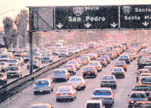

There may be no such thing as a free lunch, but sometimes you can get a little cash for a clunker.
Signed into legislation in July 2000, the California Assistance Program (CAP) will contribute $500 toward repairs, or $1,000 compensation for vehicles that do not meet the state's tough clean-air standards. As of November, Maine began a similar program, offering $1,000 for cars and as much as $2,000 for trucks. While the buyback money in California comes equally from the state and from pollution fees charged to new car owners, Maine's dollars are pulled from fines paid by industrial polluters. California's goal is to eradicate 50,000 polluting vehicles within four years.
While generous, the program is not simple; it requires many forms and numerous visits to the Department of Motor Vehicles. Likewise, vehicles earmarked for retirement have to be driveable. "Somebody can't just take an old junker, sitting in their yard, and do this," says Karen Kuechler, who's family turned in their elderly pickup for $1,000 in California. "It has to be something you might have put back on the road." The state's goals may be admirable, but Kuechler thinks their standards are too strict. "They're taking a lot of old cars off the road, but they're forcing people to buy new cars. Not everybody can buy a new car."
-Monica Smith
|
 |
|
|